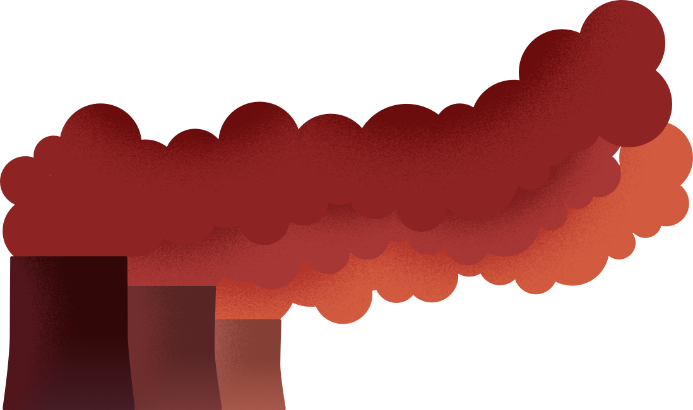
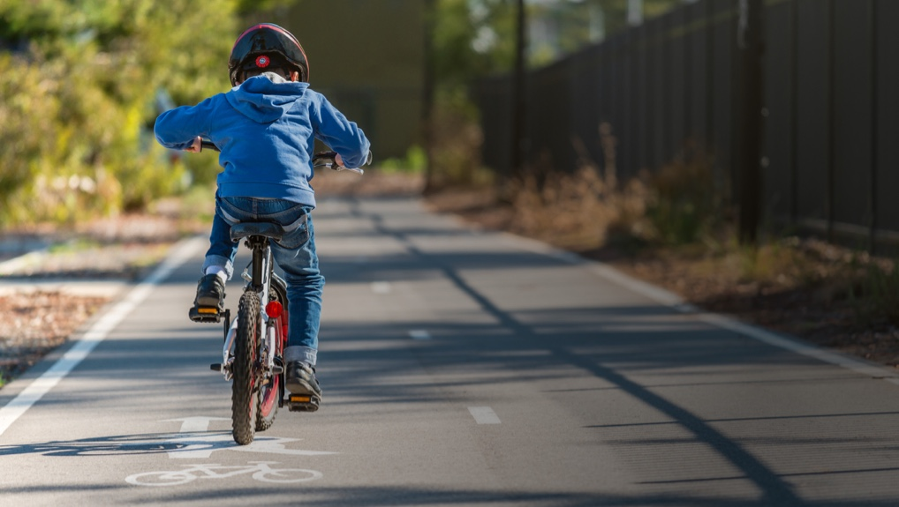
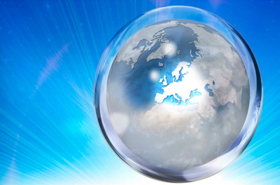

Reducerea subvențiilor pentru combustibilii fosili
Există un sprijin financiar public considerabil pentru producerea și utilizarea combustibililor fosili, care
beneficiază de o finanțare de aproape două ori mai mare decât cea pentru sursele regenerabile. Energia
regenerabilă ar fi chiar și mai competitivă, dacă combustibilii fosili ar beneficia de mai puțin sprijin.

Stiati ca...
În 1991, Danemarca a instalat prima centrală eoliană în largul mării din lume, numită
„Vindeby”, care includea 11 turbine eoliene.

Pistă solară de biciclete
În 2014, în Țările de Jos s-a construit o pistă de biciclete neobișnuită: una care generează energie solară.
Pista de 72 de metri din Krommenie, în apropiere de Amsterdam, are celule fotovoltaice integrate, care
transformă lumina solară în electricitate.
În primul an, peste 300 000 de bicicliști au mers pe această pistă de biciclete pilot, ceea ce a generat
suficientă energie pentru alimentarea a trei locuințe pentru un an întreg!
Noi idei la orizont
Găsirea unor soluții sustenabile pentru combaterea schimbărilor climatice necesită noi cercetări și
descoperiri științifice.
„Orizont 2020”, cel mai mare program de cercetare și inovare care a fost instituit vreodată la nivelul UE,
beneficiază de o finanțare de aproape 80 de miliarde EUR, pe perioada 2014-2020, având scopul de a-i ajuta
pe cercetători și pe inovatori să dezvolte idei, care ar putea fi aplicate în practică.
O mare parte a acestei finanțări (cel puțin 35 %) va fi direcționată către proiectele privitoare la climă.
UE susține, de asemenea, dezvoltarea unor centrale electrice inovatoare, cu emisii reduse de carbon.

Energie 100% regenerabilă până în 2030?
În comitatul Kalmar din Suedia, autoritățile locale și companiile energetice colaborează pentru a încerca să
transforme regiunea într-o zonă care nu va mai utiliza deloc combustibil fosil, până în anul 2030.
Acest lucru va asigura și dezvoltarea sustenabilă, creând în același timp noi locuri de muncă. Printre
acțiunile întreprinse se numără autobuzele care funcționează în proporție de 100 % cu energie regenerabilă,
inițiativele de utilizare în comun a autovehiculelor (unele dintre acestea folosesc deja mașini electrice),
producerea de combustibil din deșeurile alimentare și obținerea de energie de la centralele solare și
eoliene.